Introdução
No contexto acelerado e dinâmico da vida moderna, encontrar maneiras eficazes de otimizar o tempo livre tornou-se uma prioridade para muitos. Diante desse desafio, apresentamos o projeto "TempIn", focado no desenvolvimento de interfaces web inovadoras que visam potencializar a experiência do usuário durante seus momentos de lazer. Em um mundo cada vez mais digital, a tecnologia desempenha um papel fundamental na forma como as pessoas gerenciam e desfrutam de seu tempo livre.
Este projeto visa criar interfaces intuitivas e atraentes que proporcionem uma experiência única, oferecendo soluções personalizadas para diferentes preferências e estilos de vida. Ao concentrar-se no melhoramento do tempo livre, nosso objetivo é não apenas simplificar as atividades recreativas, mas também enriquecer a qualidade desses momentos. Seja explorando novos hobbies, conectando-se com comunidades de interesses similares ou até mesmo buscando novas e diferentes formas de expandir seus conhecimentos, o "Tempo Livre Aprimorado" busca proporcionar uma plataforma abrangente e personalizada para atender às diversas necessidades dos usuários.
Com a promessa de combinar design elegante, funcionalidades intuitivas e uma abordagem centrada no usuário, este projeto visa transformar a maneira como as pessoas aproveitam seu tempo livre, promovendo um equilíbrio saudável entre o mundo digital e as experiências offline. Ao alinhar tecnologia e bem-estar, "TempIn" aspira a ser uma contribuição valiosa para a promoção de estilos de vida mais equilibrados e gratificantes na era contemporânea.
Informações Gerais
- Projeto: TempIn
- Repositório GitHub: Tempo livre inutilizado
- Membros da equipe:
Contexto
Detalhes sobre o espaço de problema, justificativas e os objetivos do projeto.
Problema
Em um mundo cada vez mais interligado, onde a busca incessante por produtividade é constante, o tempo livre torna-se um recurso precioso para preservar a saúde mental e física. Adultos e jovens enfrentam uma pressão significativa para aumentar sua eficiência, muitas vezes sacrificando momentos de lazer. Nesse contexto, surge o Projeto "TempIn" com a missão de restaurar os benefícios do equilíbrio entre saúde mental, física e produtividade, oferecendo uma solução integrada.
Objetivos
O projeto "TempIn" tem como objetivo principal criar uma plataforma web que otimize a experiência do usuário durante seus momentos de lazer. Para alcançar esse propósito, a equipe se dedicará a desenvolver interfaces intuitivas e atraentes, simplificando a busca e o acesso a uma variedade de atividades recreativas. A personalização será uma pedra angular do projeto, proporcionando recomendações precisas com base nas preferências individuais do usuário.
Além disso, a integração de recursos sociais incentivará a formação de comunidades virtuais, promovendo a interação entre os usuários. A plataforma também buscará fornecer ferramentas eficazes de gestão de tempo, encorajando um equilíbrio saudável entre atividades online e offline. Por fim, a adaptabilidade contínua será uma prioridade, garantindo que a plataforma evolua em sintonia com as mudanças culturais e tecnológicas, permanecendo sempre atualizada e relevante para o público-alvo.
Justificativa
O avanço tecnológico trouxe inúmeras vantagens à vida moderna, mas também apresentou desafios significativos, especialmente quando se trata da gestão eficiente do tempo livre. À medida que as opções de entretenimento e atividades recreativas se multiplicam digitalmente, os usuários enfrentam dificuldades em encontrar soluções integradas que atendam às suas necessidades específicas. O problema central reside na falta de plataformas consolidadas e interfaces web intuitivas que ofereçam uma experiência abrangente e personalizada para o aproveitamento do tempo livre.
Segundo a pesquisa "Modo Acelerado 2x" realizada pela Eisenbahn em parceria com a Datafolha foi constatado que 46% da população brasileira sente que falta tempo para fazer o que gosta. Desta forma, o projeto ganha uma enorme importancia para que o brasileiro posso retornar a utilizar seu tempo livre da maneira que gosta e que sente ser adequado.
Público-alvo
O projeto "TempIn" tem como alvo principal indivíduos entre 25 e 40 anos, predominantemente jovens profissionais e estudantes, que enfrentam desafios significativos na gestão de seu tempo livre devido a agendas ocupadas e demandas profissionais. Além disso, o projeto visa atrair entusiastas de hobbies específicos, como amantes da música, cinéfilos, leitores ávidos e praticantes de atividades físicas, oferecendo uma plataforma adaptável às suas paixões individuais. Considerando o público-alvo diversificado, a plataforma será projetada para ser inclusiva, abrangendo desde aqueles que buscam explorar novos interesses até aqueles que desejam aprimorar as atividades de lazer já existentes em suas vidas.
Concepção (Design Thinking)
Detalhes do processo de discovery do projeto.
Apresente o processo de discovery do projeto. Com foco na experiência do usuário, esse processo abrange a compreensão do contexto do problema e das características do usuário, a definição do problema, a geração de ideias, a prototipagem e a elaboração de uma proposta de solução
Processo de Design Thinking
O arquivo que se segue apresenta o resultado desse processo.
Apresente o processo de Design Thinking realizado pelo grupo e documentado por meio do software Miro. No documento apresentado, devem ser incluídos: (1) a matriz CSD, (2) o mapa de stakeholders, (3) as personas, (4) as respectivas propostas de valor e (5) o processo de ideação identificando as ideias levantadas e sua priorização.
Especificações do Projeto
Documentação das especificações do projeto.
Apresente as especificações do projeto, incluindo as histórias de usuário e os requisitos funcionais e não funcionais.
Histórias de Usuários
Com base na análise das personas foram identificadas as seguintes histórias de usuários:
Apresente aqui as histórias de usuário que são relevantes para o projeto de sua solução. As Histórias de Usuário consistem em uma ferramenta poderosa para a compreensão e elicitação dos requisitos funcionais e não funcionais da sua aplicação. Se possível, agrupe as histórias de usuário por contexto, para facilitar consultas recorrentes à essa parte do documento.
EU COMO...PERSONA |
QUERO/PRECISO...FUNCIONALIDADE |
PARA...MOTIVO/VALOR |
|---|---|---|
| Saulo | Um software que me ajude a organizar meu tempo livre escasso | Ter um descanso do trabalho e estudos |
| Fernanda | Um software que me ajude a organizar meu tempo livre de sobra | Direcionar minhas atividades diárias ao meu crescimento pessoal |
Requisitos
As tabelas que se seguem apresentam os requisitos funcionais e não funcionais que detalham o escopo do projeto.
Com base nas Histórias de Usuário, enumere os requisitos da sua solução. Classifique esses requisitos em dois grupos:
- Requisitos Funcionais (RF): correspondem a uma funcionalidade que deve estar presente na plataforma (ex: cadastro de usuário).
- Requisitos Não Funcionais (RNF): correspondem a uma característica técnica, seja de usabilidade, desempenho, confiabilidade, segurança ou outro (ex: suporte a dispositivos iOS e Android).
Lembre-se que cada requisito deve corresponder à uma e somente uma característica alvo da sua solução. Além disso, certifique-se de que todos os aspectos capturados nas Histórias de Usuário foram cobertos.
Requisitos Funcionais
| ID | Descrição do Requisito | Prioridade |
|---|---|---|
| RF-001 | Opção para cadastro de usuários | ALTA |
| RF-002 | Permitir que o usuário selecione interesses | MÉDIA |
| RF-003 | Opção para logar no site | ALTA |
| RF-004 | Permitir que o usuário cadastre interesses | MÉDIA |
| RF-005 | Permitir que o usuário crie uma agenda personalizada com seus interesses | MÉDIA |
| RF-006 | Opção para que o usuário infrome o quanto pode gastar | ALTA |
| RF-007 | Opção para o usuário selecionar tarefas para casa | BAIXA |
| RF-008 | Opção para o usuário selecionar tarefas para realizar fora de casa | BAIXA |
| RF-009 | Opção que gera uma tarefa aleatória para o usuário | BAIXA |
| RF-010 | Gerenciar interesses do usuário e organizar tarefas | MÉDIA |
| RF-011 | Opção para que o usuário veja qual foi a porcentagem de tarefas que realizou no período. | BAIXA |
| RF-012 | Opção para que o usuário selecione sua produtividade desejada no período. | MÉDIA |
| RF-013 | Opção para encontrar amigos | BAIXA |
| RF-014 | Captar todos os eventos da cidade e listar todos para o usuário | BAIXA |
| RF-015 | Setor para envio de sugestões | MÉDIA |
| RF-016 | Opção para selecionar a tarefa como favorita | BAIXA |
| RF-017 | Opção para organizar os sites e gerenciar os usuários | ALTA |
| RF-018 | Setor para análise e levantamentos de possibilidades para implementação de sugestões | MÉDIA |
| RF-019 | Gerenciamento de usuários | ALTA |
| RF-020 | Setor para resolução de problemas de usuários | ALTA |
| RF-021 | Setor para gerenciar postagens e evitar conteúdos indesejados na plataforma | ALTA |
Requisitos Não-Funcionais
| ID | Descrição do Requisito | Prioridade |
|---|---|---|
| RNF-001 | O sistema deve ser responsivo | ALTA |
| RNF-002 | O sistema deve conter um layout acolhedor | ALTA |
| RNF-003 | O sistema deve conter integração com banco de dados | ALTA |
| RNF-004 | O sistema deve rodar em qualquer navegador | MÉDIA |
| RNF-005 | Qualquer usuário deve conseguir utilizar o sistema | ALTA |
| RNF-006 | O sistema deve estar ativo todos os dias em todas as horas | ALTA |
| RNF-007 | O sistema deve ter alto desempenho, no máximo 3 segundos para cada ação | ALTA |
| RNF-008 | O sistema deve realizar backups semanais | ALTA |
| RNF-009 | O sistema deve conter baixa taxa de erros | ALTA |
Projeto de Interface
Artefatos relacionados com a interface e a interacão do usuário na proposta de solução.
Apresente a ideia de interface que está sendo prevista para o projeto. Inclua os wireframes, o user/screen flow e o protótipo interativo.
User/Screen Flow e Protótipo interativo
Artefatos relacionados com a interface e a interacão do usuário na solução proposta.
O fluxo de usuário (User Flow) é uma técnica que permite ao desenvolvedor mapear todo fluxo de
telas do site ou app. Essa técnica funciona para alinhar os caminhos e as possíveis ações que o
usuário pode fazer junto com os membros de sua equipe. 
Um protótipo interativo apresenta o projeto de interfaces e permite ao usuário navegar pelas
funcionalidades como se estivesse lidando com o software pronto. Veja o exemplo a seguir.
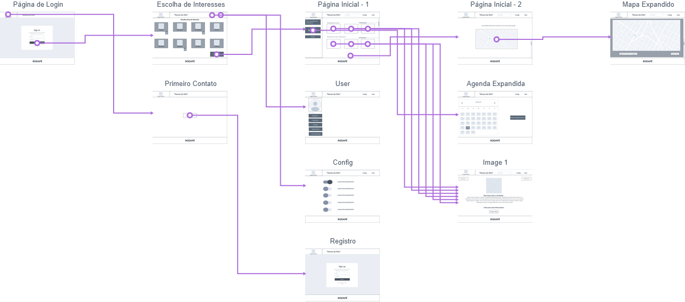
https://userflows.marvelapp.com/8bidcig?utm_campaign=prototype-player&utm_source=other&utm_medium=web-app&utm_term=player&utm_content=userflowsWireframes
Protótipo de telas do sistema em baixa fidelidade (rascunhos).
Os Wireframes são protótipos das telas da aplicação usados em design de interface para sugerir a
estrutura de um site web e seu relacionamentos entre suas páginas. Um wireframe web é uma ilustração
semelhante ao layout de elementos fundamentais na interface. 
Tela inicial do site.
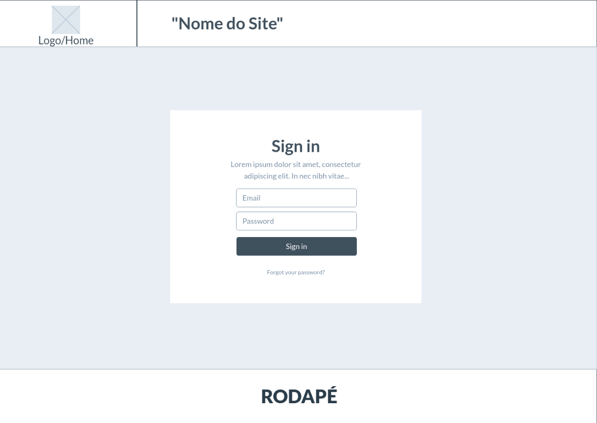Tela de login/registrar do site.
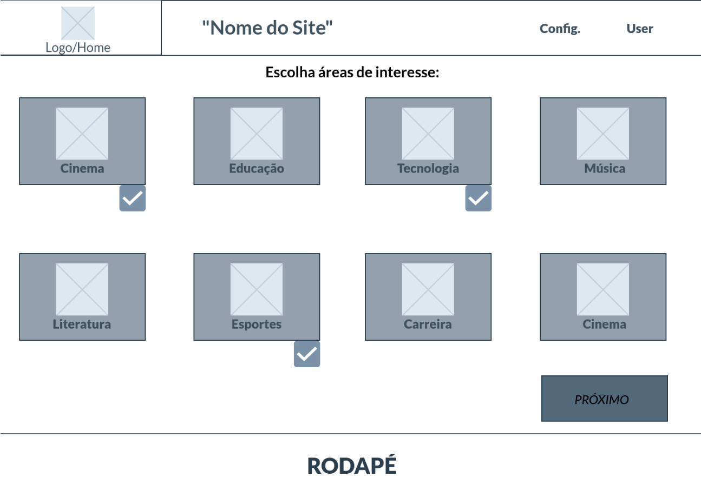Tela de escolhas de interesses do usuário.
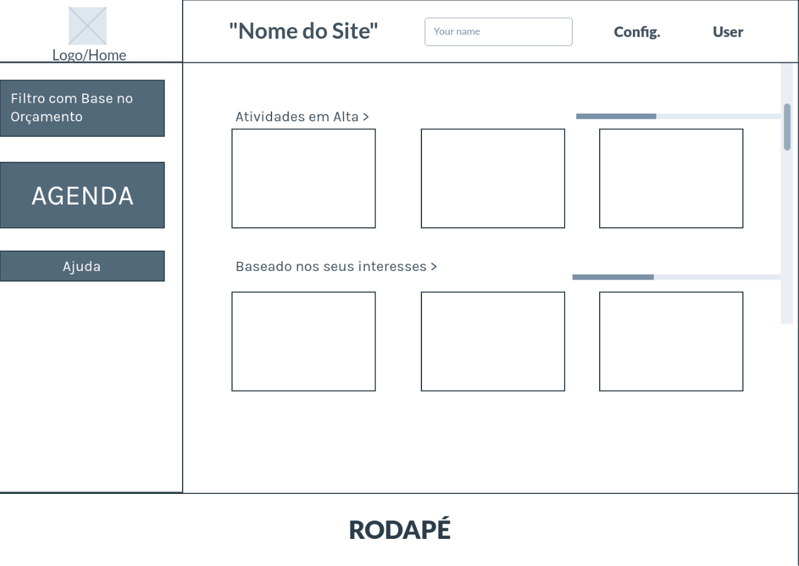Tela de home do site.
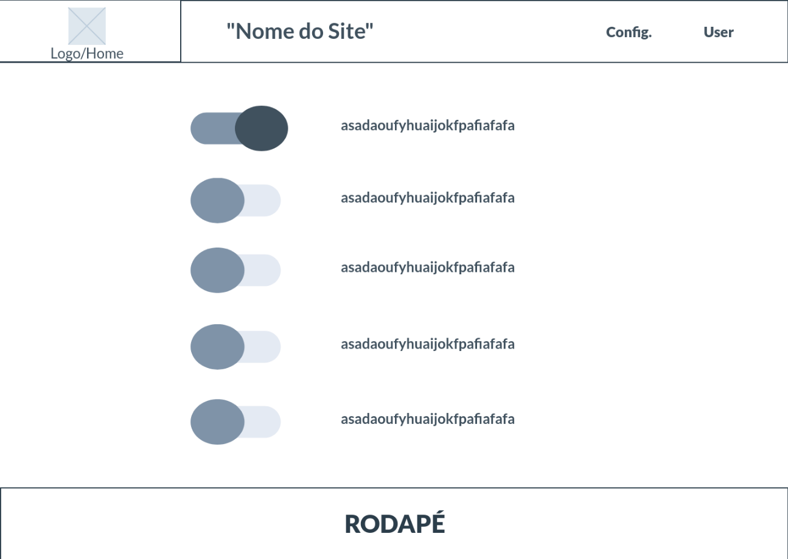Menu de configuração do site.
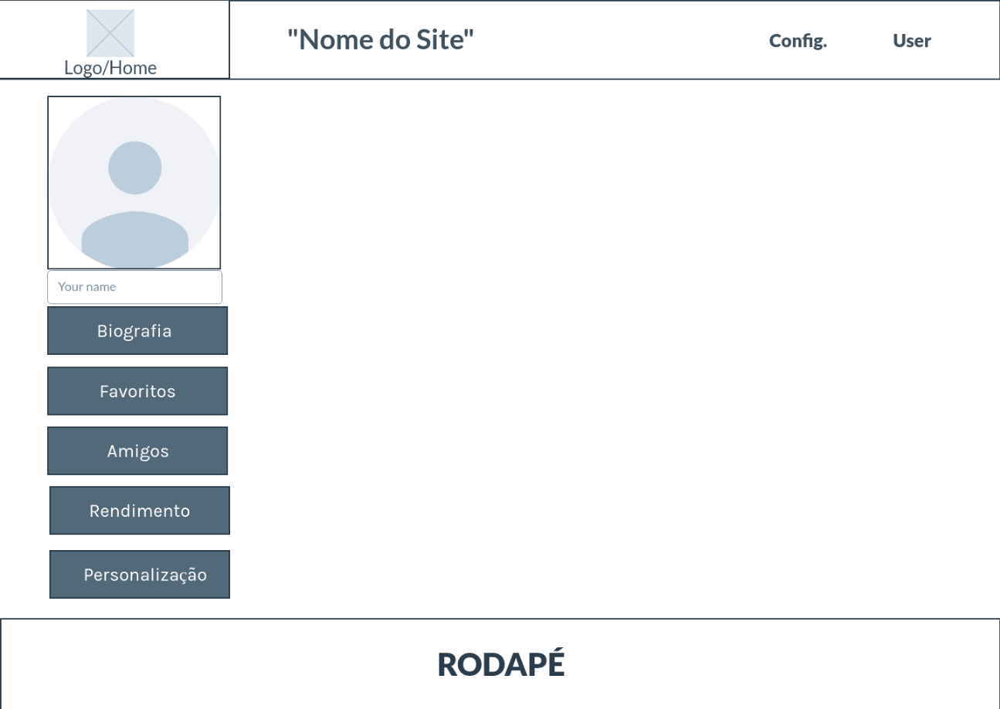Pagina de perfil do usuário.
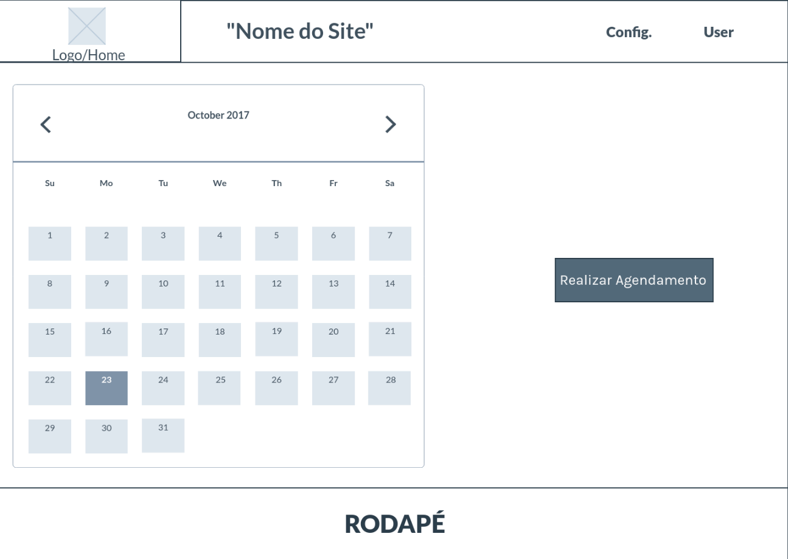Pagina da agenda do usuário.
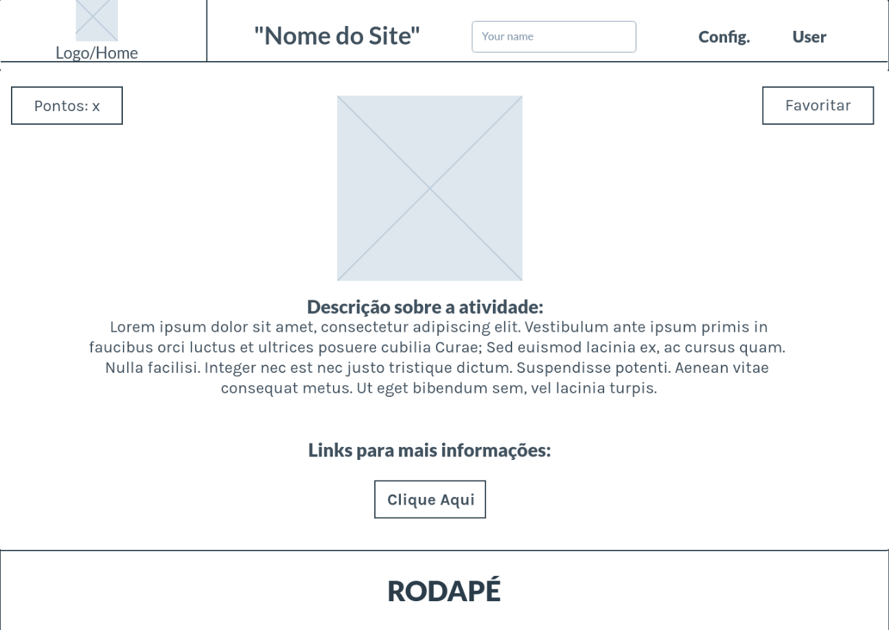Pagina de descrição sobre a atividade selecionada.
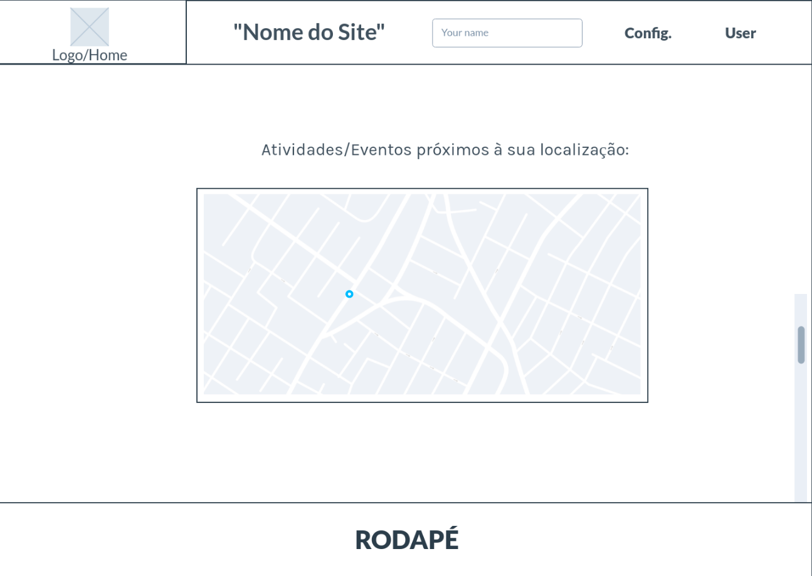Mapa de atividades/eventos na proximidade do usuário.
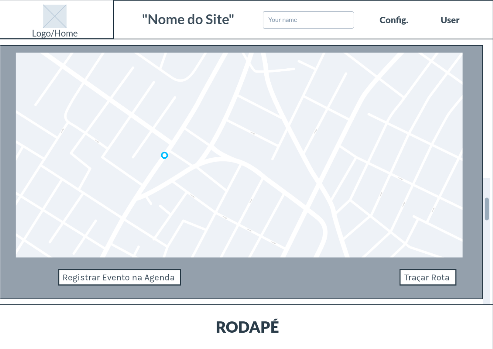Mapa expandido de atividades/eventos.
Metodologia
Detalhes sobre a organização do grupo e o ferramental empregado.
Nesta parte do documento, você deve apresentar a metodologia adotada pelo grupo, descrevendo o processo de trabalho baseado nas metodologias ágeis, a divisão de papéis e tarefas, as ferramentas empregadas e como foi realizada agestão de configuração do projeto via GitHub.
Coloque detalhes sobre o processo de Design Thinking e a implementação do Framework Scrum seguido pelo grupo. O grupo poderá fazer uso de ferramentas on-line para acompanhar o andamento do projeto, a execução das tarefas e o status de desenvolvimento da solução.
Ferramentas
Relação de ferramentas empregadas pelo grupo durante o projeto.
Liste as ferramentas empregadas no desenvolvimento do projeto, justificando a escolha delas, sempre que possível. Inclua itens como: (1) Editor de código, ferramentas de comunicação, ferramentas de diagramação, plataformas de hospedagem, entre outras.
| Ambiente | Plataforma | Link de Acesso |
|---|---|---|
| Processo de Design Thinking | Miro | https://miro.com/app/board/uXjVMql3kU4=/?share_link_id=33150410178 |
| Repositório de código | GitHub | https://github.com/ICEI-PUC-Minas-PPLES-TI/plf-es-2023-2-ti1-0385100-tempo-livre-inutilizado |
| Protótipo Interativo | Marvel App | https://userflows.marvelapp.com/8bidcig?utm_campaign=prototype-player&utm_source=other&utm_medium=web-app&utm_term=player&utm_content=userflows |
Gestão do Projeto
Divisão de papéis no grupo e apresentação da estrutura da ferramenta de controle de tarefas (Kanban).
Apresente a divisão de papéis e tarefas entre os membros do grupo. Informe quem é o Scrum Master, o Product Owner e os desenvolvedores. Informe também quem é o responsável pela documentação do projeto.
Apresente o quadro de gerenciamento do time (Kanban), seu formato e as experiências na utilização dessa ferramenta (GitHub Projects)
Scrum Master - Ian Novais
Product Owner - Rommel Vieira e Roberto Felipe
Desenvolvedores - Gabriel Lage, Helio Ernesto, Ian dos Reis, João Antonio, Marcos Taveira e Saulo José
Documentação do projeto - Gabriel Lage e Marcos Taveira
Design Think - Gabriel Lage, Helio Ernesto, Ian dos Reis, João Antonio, Marcos Taveira e Saulo José
Apresentação - Ian dos Reis, Saulo José e Gabriel Lage
Protótipo Interativo - João Antonio, Marcos Taveira e Helio Ernesto
Repositório GitHub - Gabriel Lage
Controle de Versão
Estrutura do fluxo de trabalho no ambiente do GitHub.
Discuta como a configuração do projeto foi feita na ferramenta de versionamento (GitHub). Exponha
como a gerência de tags, merges, commits e branchs é realizada. Discuta como a gerência de issues foi
realizada.


Solução
Esta seção apresenta todos os detalhes da solução criada no projeto.
Apresente cada uma das funcionalidades que a aplicação fornece tanto para os usuários quanto aos administradores da solução.
Inclua, para cada funcionalidade, itens como: (1) titulos e descrição da funcionalidade; (2) Estrutura de dados associada; (3) o detalhe sobre as instruções de acesso e uso.
Video do Projeto
O vídeo a seguir traz uma apresentação do problema que a equipe está tratando e a proposta de solução.
O video de apresentação é voltado para que o público externo possa conhecer a solução. O formato é livre, sendo importante que seja apresentado o problema e a solução numa linguagem descomplicada e direta.
Utilize o recurso de compartilhamento via embed e inclua o vídeo logo abaixo.
Funcionalidades
Esta seção apresenta as funcionalidades da solução.
Apresente cada uma das funcionalidades que a aplicação fornece tanto para os usuários quanto aos administradores da solução.
Inclua, para cada funcionalidade, itens como: (1) titulos e descrição da funcionalidade; (2) Estrutura de dados associada; (3) o detalhe sobre as instruções de acesso e uso.
Funcionalidade 1 - Escolha de Interesses
Permite o usuario de escolher o tipo de atividade que seja mais de seu gosto
- Estrutura de dados: Atividades
- Instruções de acesso:
- Abra o site e realize seu cadastro
- Uma nova pagina se abrirá com as Escolhas de Interesses
- Em seguida, escolha as atividades que possui maior interesse

Funcionalidade 2 - Pesquisa de Atividades
Permite a inclusão, leitura, alteração e exclusão de contatos para o sistema
- Estrutura de dados: Atividades
- Instruções de acesso:
- Abra o site e efetue o login
- Acesse a aba "Atividades"
- Em seguida, digite uma palavra chave de uma atividade do seu gosto para que apareçam apenas atividades relacionadas a essa palavra

Funcionalidade 3 - Calendário
Permite a inclusão de atividades em um calendário para permitir o usuario se organizar
- Estrutura de dados: Atividades
- Instruções de acesso:
- Abra o site e efetue o login
- Acesse a aba "Calendário"
- Em seguida, clique em "Nova Atividade" e selecione o dia para realizar tal atividade

Funcionalidade 4 - Mapa
Permite a visualização de um mapa interativo do Google para facilitar a escolha das atividades por proximidade
- Estrutura de dados: Atividades
- Instruções de acesso:
- Abra o site e efetue o login
- Acesse a aba "Mapa"
- Em seguida, será apresentada uma pagica com um mapa e atividades disponiveis para traçar a rota até tal atividade

Funcionalidade 5 - Amigos
Permite a visualização de todos os Usuários adicionados como amigo
- Estrutura de dados: Amigos
- Instruções de acesso:
- Abra o site e efetue o login
- Acesse a aba "Amigos"
- Em seguida, será apresentada uma pagina com todos os amigos deste usuário
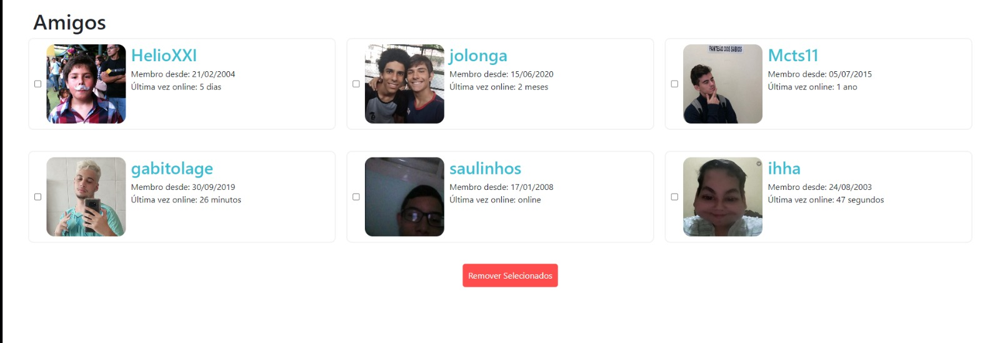
Funcionalidade 6 - Atividades Disponíveis
Permite a visualização de atividades disponiveis para serem realizadas pelo usuário
- Estrutura de dados: Atividades
- Instruções de acesso:
- Abra o site e efetue o login
- Acesse a aba "Atividades"
- Em seguida, será apresentada uma pagina com todas as atividades disponiveis para o usuário realizar
Funcionalidade 7 - Cadastro de Favoritos
Permite a escolha de atividades favoritas pelo usuário
- Estrutura de dados: Atividades
- Instruções de acesso:
- Abra o site e efetue o login
- Acesse a aba "Atividades"
- Em seguida, escolha as atividades favoritas e clique na estrela para que ela fique amarela
Funcionalidade 8 - Apresentação de Favoritos
Permite a visualização das atividades favoritas do usuário
- Estrutura de dados: Usuário
- Instruções de acesso:
- Abra o site e efetue o login
- Acesse a aba "Favoritos"
- Em seguida, será apresentada uma página com todas as atividades escolhidas como favoritas pelo Usuário
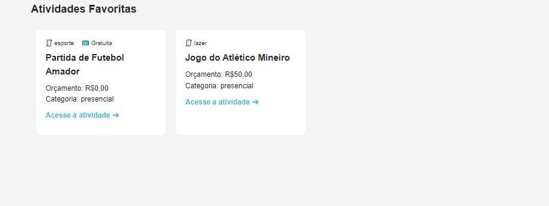
Funcionalidade 9 - Estatisticas de Usuário
Permite a visualização dos dados pelo usuário em forma de tabela e gráfico
- Estrutura de dados: Gráfico
- Instruções de acesso:
- Abra o site e efetue o login
- Acesse a aba "Estatísticas"
- Em seguida, será apresentada uma tabela com as Atividades e um Grafico em Colunas com as Atividades realizadas recentemente pelo Usuário


Funcionalidade 10 - Cadastro de Atividades
Permite a inclusão de diferentes atividades
- Estrutura de dados: Atividades
- Instruções de acesso:
- Abra o site e efetue o login
- Acesse a aba "Atividades"
- Em seguida, clique em "Cadastrar Atividade"
Funcionalidade 11 - Apresentação de Atividades
Permite a visulaização das atividades disponiveis perto do Usuário
- Estrutura de dados: Atividades
- Instruções de acesso:
- Abra o site e efetue o login
- Acesse a aba "Atividades"
- Em seguida, todas as atividades estarão apresentadas na tela
Funcionalidade 12 - FAQ - Suporte
Permite a resolução de possíveis dúvidas que os Usuários possuem frequentemente
- Estrutura de dados: Suporte
- Instruções de acesso:
- Abra o site e efetue o login
- Acesse a aba "Suporte"
- Em seguida, pesquise uma palavra chave para a sua dúvida
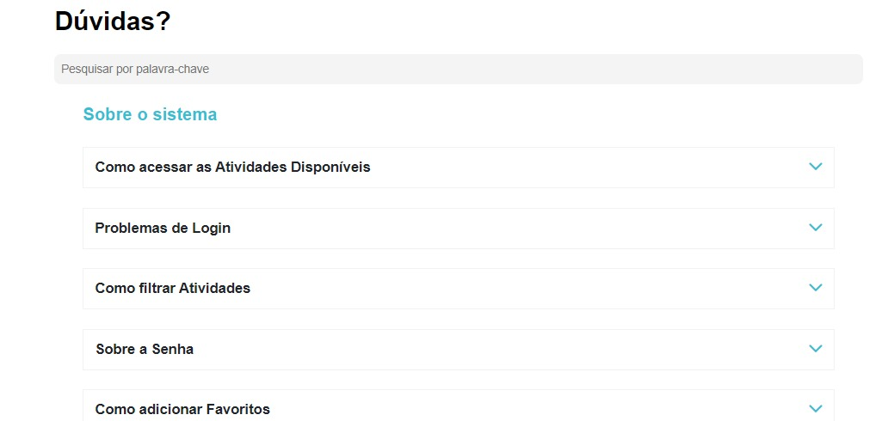
Estruturas de Dados
Descrição das estruturas de dados utilizadas na solução com exemplos no formato JSON.
Apresente as estruturas de dados utilizadas na solução tanto para dados utilizados na essência da aplicação quanto outras estruturas que foram criadas para algum tipo de configuração
Nomeie a estrutura, coloque uma descrição sucinta e apresente um exemplo em formato JSON.
Estrutura de Dados - Atividades
Informações das Atividades a seram apresentadas nas telas correspondentes
{
"atividades": [
{
"genero": "lazer",
"nome": "Jogo do Atlético Mineiro",
"orcamento": "50,00",
"endereco": "Estádio Mineirão, Av. Antônio Abrahão Caram, 1001 - São José, Belo Horizonte",
"categoria": "presencial",
"id": 1
},
{
"genero": "estudo",
"nome": "Prova de Algoritmos e Estruturas de Dados",
"orcamento": "0,00",
"endereco": "Universidade Federal de Minas Gerais, Av. Antônio Carlos, 6627 - Pampulha, Belo Horizonte",
"categoria": "presencial",
"id": 2
},
{
"genero": "lazer",
"nome": "Show da Banda XYZ",
"orcamento": "30,00",
"endereco": "Teatro Municipal, Av. Amazonas, 265 - Centro, Belo Horizonte",
"categoria": "presencial",
"id": 3
},
{
"genero": "esporte",
"nome": "Corrida no Parque Municipal",
"orcamento": "0,00",
"endereco": "Parque Municipal, Av. Afonso Pena, 1377 - Centro, Belo Horizonte",
"categoria": "presencial",
"id": 4
},
{
"genero": "lazer",
"nome": "Festival de Cinema",
"orcamento": "25,00",
"endereco": "Cine Belas Artes, Av. Brasil, 856 - Santa Efigênia, Belo Horizonte",
"categoria": "presencial",
"id": 5
},
{
"genero": "esporte",
"nome": "Partida de Tênis",
"orcamento": "10,00",
"endereco": "Clube de Tênis BH, R. Gonçalves Dias, 274 - Funcionários, Belo Horizonte",
"categoria": "presencial",
"id": 6
},
{
"genero": "cultura",
"nome": "Visita ao Museu de Arte da Pampulha",
"orcamento": "15,00",
"endereco": "Av. Otacílio Negrão de Lima, 16585 - Pampulha, Belo Horizonte",
"categoria": "presencial",
"id": 7
},
{
"genero": "lazer",
"nome": "Piquenique no Parque das Mangabeiras",
"orcamento": "20,00",
"endereco": "Av. José do Patrocínio Pontes, 580 - Mangabeiras, Belo Horizonte",
"categoria": "presencial",
"id": 8
},
{
"genero": "esporte",
"nome": "Aula de Surf",
"orcamento": "40,00",
"endereco": "Praia do Farol, Av. Otacílio Negrão de Lima, s/n - Farol de Santa Luzia, Belo Horizonte",
"categoria": "presencial",
"id": 9
},
{
"genero": "lazer",
"nome": "Concerto de Jazz",
"orcamento": "35,00",
"endereco": "Belo Horizonte Hall, Av. Nossa Senhora do Carmo, 230 - Savassi, Belo Horizonte",
"categoria": "presencial",
"id": 10
},
{
"genero": "cultura",
"nome": "Peça de Teatro",
"orcamento": "25,00",
"endereco": "Teatro Sesiminas, R. Padre Marinho, 60 - Santa Efigênia, Belo Horizonte",
"categoria": "presencial",
"id": 11
},
{
"genero": "esporte",
"nome": "Caminhada no Parque Municipal",
"orcamento": "0,00",
"endereco": "Parque Municipal, Av. Afonso Pena, 1377 - Centro, Belo Horizonte",
"categoria": "presencial",
"id": 12
},
{
"genero": "lazer",
"nome": "Noite de Karaokê",
"orcamento": "15,00",
"endereco": "Bar do Karaokê, R. dos Tupinambás, 385 - Centro, Belo Horizonte",
"categoria": "presencial",
"id": 13
},
{
"genero": "cultura",
"nome": "Visita à Biblioteca Pública Estadual Luiz de Bessa",
"orcamento": "0,00",
"endereco": "Praça da Liberdade, 21 - Funcionários, Belo Horizonte",
"categoria": "presencial",
"id": 14
},
{
"genero": "lazer",
"nome": "Jogo de Paintball",
"orcamento": "30,00",
"endereco": "Arena Paint Fight, Av. Raja Gabaglia, 2727 - Estoril, Belo Horizonte",
"categoria": "presencial",
"id": 15
},
{
"genero": "cultura",
"nome": "Aula de Fotografia",
"orcamento": "20,00",
"endereco": "Escola de Fotografia BH, R. da Bahia, 1148 - Centro, Belo Horizonte",
"categoria": "presencial",
"id": 16
},
{
"genero": "esporte",
"nome": "Partida de Futebol Amador",
"orcamento": "0,00",
"endereco": "Campo de Futebol do Bairro, R. dos Esportes, s/n - Vila Esportiva, Belo Horizonte",
"categoria": "presencial",
"id": 17
},
{
"genero": "lazer",
"nome": "Dança de Salão",
"orcamento": "25,00",
"endereco": "Escola de Dança Ritmo Latino, Av. Amazonas, 1582 - Centro, Belo Horizonte",
"categoria": "presencial",
"id": 18
},
{
"genero": "lazer",
"nome": "Aula de Yoga",
"orcamento": "20,00",
"endereco": "Espaço Zen, R. dos Girassóis, 123 - Funcionários, Belo Horizonte",
"categoria": "presencial",
"id": 19
},
{
"genero": "cultura",
"nome": "Sessão de Poesia",
"orcamento": "10,00",
"endereco": "Café Literário, R. Antônio de Albuquerque, 609 - Savassi, Belo Horizonte",
"categoria": "presencial",
"id": 20
}
],
}
Estrutura de Dados - Usuários
Registro dos usuários do sistema utilizados para login e para o perfil do sistema
"usuarios": [
{
"id": 1,
"login": "admin",
"senha": "123",
"nome": "Administrador do Sistema",
"email": "admin@gmail.com"
},
{
"id": 2,
"login": "user",
"senha": "123",
"nome": "Usuario Comum",
"email": "user@gmail.com"
},
{
"id": 3,
"login": "aspiradordepo",
"senha": "chocomenta",
"nome": "Jeremias",
"email": "jererecao@gmail.com",
"idade": 19,
"grafico": [...],
}
Estrutura de Dados - Estatisticas do Gráfico
Registro das atividades realizadas pelo usuário para serem apresentadas nas Estatisticas
"grafico": [
{
"atividade": "Estudar Inglês",
"tempo_gasto": "60 minutos",
"data": "2023-10-13"
},
{
"atividade": "Estudar Programação",
"tempo_gasto": "180 minutos",
"data": "2023-10-14"
},
{
"atividade": "Ir ao bar",
"tempo_gasto": "150 minutos",
"data": "2023-10-15"
},
{
"atividade": "Jogar Video Game",
"tempo_gasto": "225 minutos",
"data": "2023-10-16"
},
{
"atividade": "Outras atividades",
"tempo_gasto": "90 minutos",
"data": "2023-10-16"
},
{
"atividade": "Assistir Filme",
"tempo_gasto": "170 minutos",
"data": "2023-10-17"
},
{
"atividade": "Assistir Série",
"tempo_gasto": "150 minutos",
"data": "2023-10-18"
},
{
"atividade": "Ir na Academia",
"tempo_gasto": "60 minutos",
"data": "2023-10-19"
},
{
"atividade": "Assistir Série",
"tempo_gasto": "90 minutos",
"data": "2023-10-19"
},
{
"atividade": "Assistir Filme",
"tempo_gasto": "125 minutos",
"data": "2023-10-17"
},
{
"atividade": "Estudar Programação",
"tempo_gasto": "62 minutos",
"data": "2023-10-19"
}
]
Estrutura de Dados - Amigos
Registro dos usuários do sistema adicionados como amigos pelo usuário
"amigos": [
{
"id": 1,
"login": "Augusto06",
"senha": "augustodabalaboa",
"nome": "Augusto",
"email": "augusto@gmail.com"
},
{
"id": 2,
"login": "Kaiser098",
"senha": "123456",
"nome": "Douglas",
"email": "douglas@gmail.com"
},
{
"nome": "Jeremias",
"email": "",
"id": 3
},
{
"nome": "Administrador do Sistema",
"email": "admin@gmail.com",
"id": 4
}
]
Módulos e APIs
Esta seção apresenta os módulos e APIs utilizados na solução.
Apresente os módulos e APIs utilizados no desenvolvimento da solução. Inclua itens como: (1) Frameworks, bibliotecas, módulos, etc. utilizados no desenvolvimento da solução; (2) APIs utilizadas para acesso a dados, serviços, etc.
Scripts:
- Google Maps API - https://console.cloud.google.com/google/maps-apis/discover?project=stable-synapse-407323&pli=1
- Bootstrap 4 - http://getbootstrap.com/
- Flaticon - https://www.flaticon.com/br/
FAQ
Perguntas e respostas comuns associadas ao projeto.
Apresente uma lista de perguntas e respostas comuns associadas ao projeto. Inclua perguntas como: (1) detalhes de acesso e uso do projeto; (2) informações sobre a instalação e configuração da aplicação; (3) questões sobre a manutenção da aplicação; (4) detalhes sobre a integração da aplicação com outros sistemas; (5) questões sobre a segurança da aplicação.
Referências Bibliográficas
Esta seção apresenta as referências bibliográficas utilizadas no projeto.
Apresente as referências bibliográficas utilizadas no projeto. Inclua itens como: (1) livros, artigos, tutoriais, etc. utilizados no desenvolvimento da solução; (2) links para sites, blogs, etc. utilizados no desenvolvimento da solução.
https://developer.mozilla.org/pt-BR/docs/Web/CSS
https://developer.mozilla.org/pt-BR/docs/Web/HTML
https://pt.stackoverflow.com/
https://developers.google.com/maps/documentation/javascript?hl=pt-br